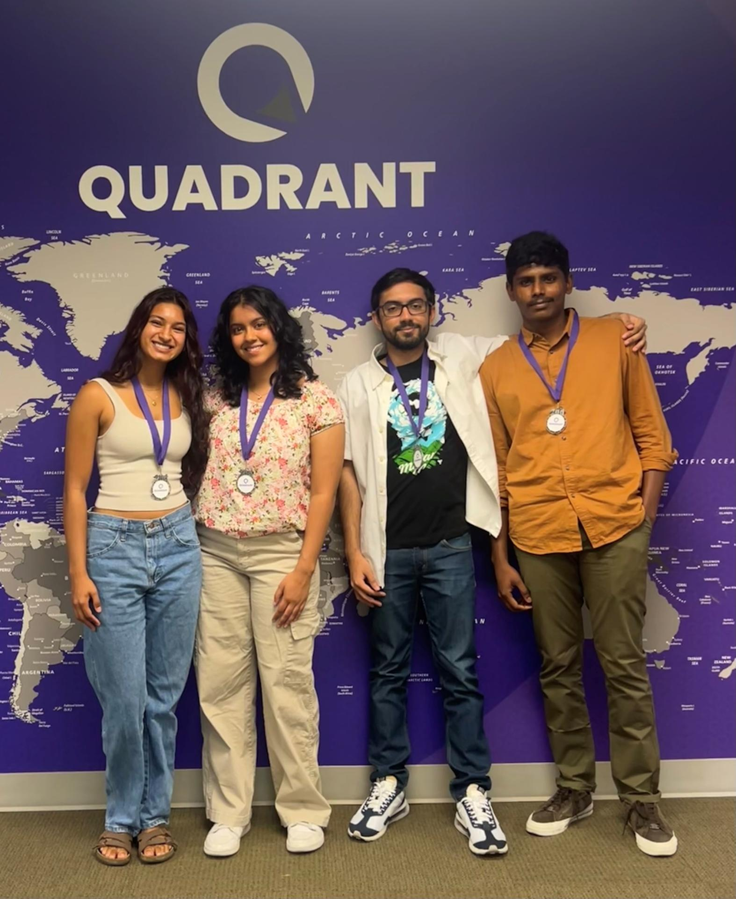
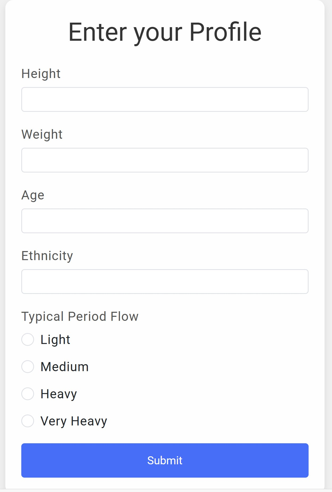
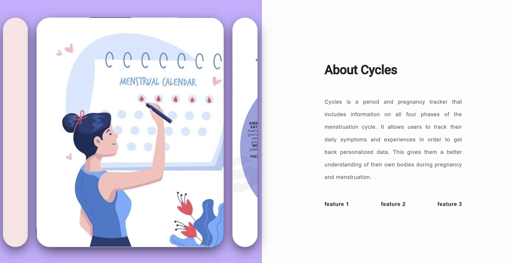

Cycles
A full-stack women’s healthcare platform developed during my software engineering internship at Quadrant Technologies.
View GitHub repositoryOverview
Cycles helps users track menstrual health and pregnancy information through personalized forecasts generated from individual health data and research-backed cycle patterns. The platform was designed to make complex health information easier to understand through an accessible daily tracking experience.
Our team won second place out of 13 internship teams for building the Cycles web application, recognized for its product impact and technical execution.

What I built
I led front-end development of the React application and deployed it through an Azure DevOps CI/CD pipeline. As part of the team, I developed full-stack features using React, REST APIs, Azure SQL Server, and Azure DevOps to process user health data and generate personalized cycle and pregnancy predictions for more than 250 users.
I implemented ETL processes to extract, transform, and load raw health data using Azure Data Factory and Azure Databricks. I validated data quality and ensured accurate ingestion while applying Agile workflows and end-to-end software development lifecycle practices across requirements, development, testing, deployment, and maintenance.

